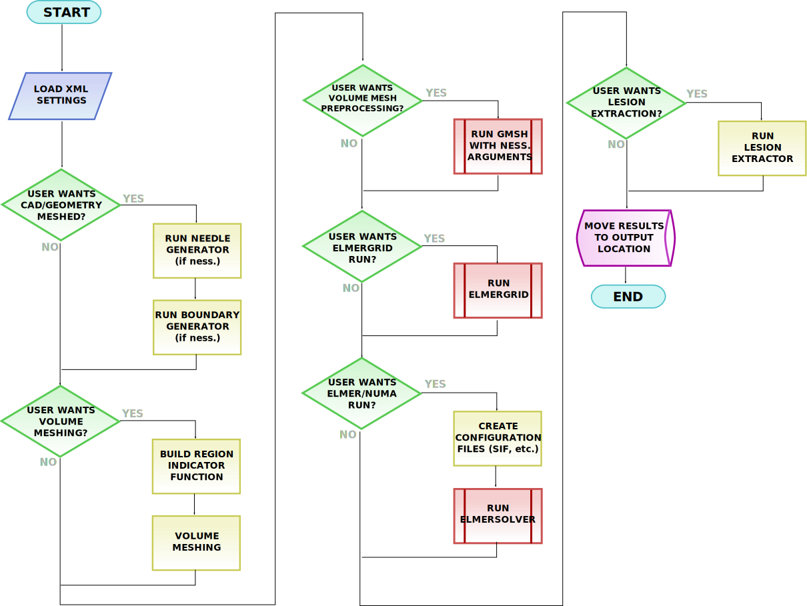

Go-Smart Simulation Framework
The simulation framework (as opposed to the architecture) is a single specific workflow that allows a user to provide a set of STL surfaces and Elmer configuration, and get back a lesion surface.
This workflow is based primarily on Elmer FEM, a Finite Element multiphysics package primarily developed by CSC in Finland, and CGAL, a computational geometry library primarily developed by GeometryFactory in France. We thank the developers of both projects for their feedback and input on Elmer and CGAL related questions. Other components depend on GMSH, VTK and PythonOCC.
Non-GSSF workflow options include Docker-defined workflows. These may partially overlap, for example, by using the GSSF CGAL meshing tools to provide a volumetric mesh before launching an in-Docker workflow. This is the point you could perhaps substitute a Taverna workflow, for those more familiar with it.
GSSF itself consists of a series of semi-optional steps based on a GSSF-XML configuration file. This file is actually fairly similar to the GSSA-XML, but more case-specific to the workflow. For instance, it will have mesher configuration indicating which surfaces the CGAL mesher should include. GSSA contains a module for compiling GSSA-XML to GSSF-XML, if possible.
It is entirely reasonable to use GSSF separately from the rest of the GSSA architecture, starting with a GSSF-XML settings file and appropriately laid out directory. This is especially useful for offline debugging of simulation settings, which you may (or may not) want to update in the CDM later, but, in general, provides a simple workflow for taking STL surfaces, producing a volumetric mesh, running an Elmer simulation and returning a clean STL isosurface. Moreover, it is scriptable and using fairly flexible command-line arguments, and terminal output is nicely colour-coded.
Execution of the workflow is managed by go-smart-launcher.
Workflow
The workflow follows the illustrated steps. It executes (in order), the Needle Library, the meshers, the mesh optimizer, ElmerGrid, the solver then lesion extraction on the results. It may also, if configured, run validation.

Directory layout
On start-up of go-smart-launcher, GSSF is given a GSSF-XML file.
Conventionally, this is named settings.xml and placed in the working directory
with all input STL files in a subfolder input.
input/
settings.xml
As the workflow progresses, separate directories are created for each component (possibly multiple for certain components).
input/
elmer/
elmergrid/
...
lesion/
logger/
output/
validation/
settings.xml
The final output STL surface should appear in the output folder prior to
successful exit. The logs for all components are, by default, kept in the
logger directory.
Improvements
- This should be run as part of a normal Docker workflow, rather than as a special case
- The use of
loggeras a singleton should be minimized